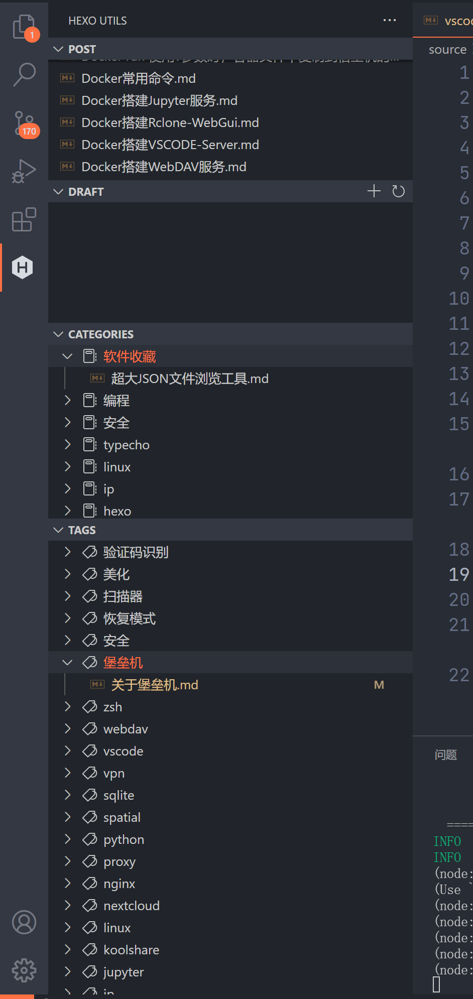
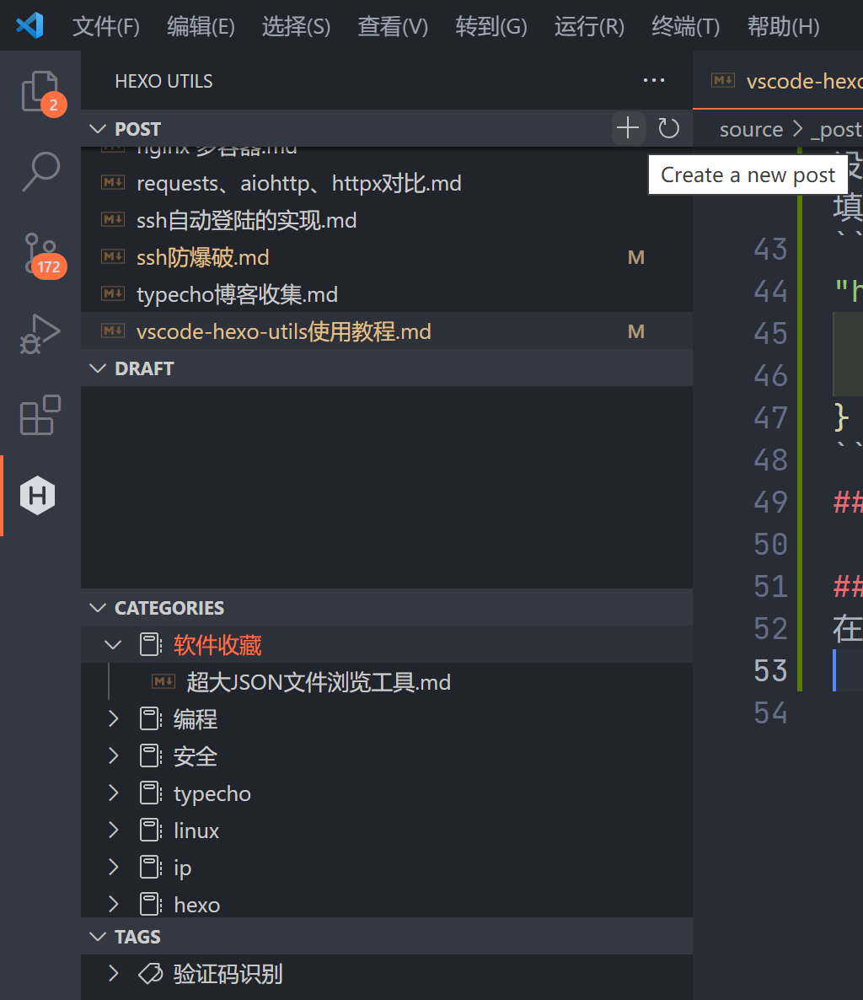

前言
为了解决Typecho需要自建服务器，容易数据丢失的问题，从Typecho转移到Hexo，但是Hexo需要解决只能本地写博客，而且还要安装一堆依赖的问题，又从网上学到了Hexo+Github Acitons的组合，这样只要有浏览器就能登录Github写博客。
最稳妥的的还是使用原生的
Hexo环境（node.js），这样可以本地先预览博客最终效果，再发布，这样可以减少commit次数。
只是本地写博客如果采用Hexo最原始的方式，即：先cd到Hexo目录->再hexo new post->再到_posts目录中找到新建的md文件进行编辑，就显得非常繁琐不友好了。
经过一番折腾，终于找到了vscode-hexo-utils这款神器。
介绍
vscode-hexo-utils是一款VSCODE插件，可以实现在VSCODE中方便的写Hexo博客（新建、编辑、管理MD文件），省去了先cd到Hexo目录->再hexo new post->再到_posts中找到新建的md文件进行编辑的步骤，而且支持粘贴图片后自动保存到相应目录并插入进MD中，简直美滋滋。
同时还支持按Draft、Post、Categories、Tags管理文章，具体效果如图：

安装
首先得安装VSCODE…此步略。
然后在VSCODE的插件市场（Ctrl+Shift+X调出）中搜索vscode-hexo-utils，找到并安装它。
设置
安装完毕后，进入VSCODE的设置(Ctrl+,)，在新界面顶部搜索框输入@ext:fantasy.vscode-hexo-utils将插件的设置项筛选出来。这里介绍几个重要的设置。
Hexo: Generate Time Format
这里设置新建文章、插入图片时自动生成的时间格式，留空的话，生成的时间形如：2021-08-21T07:27:21+08:00，可以自定义，具体变量参考，举个栗子：
1、YYYY-MM-DD HH:mm:ss
生成的时间形如:2021-08-23 14:18:57
2、YYYY-MM-DD HH:mm
生成的时间形如:2021-08-23 14:18
Hexo: Hexo Project Root
这里设置Hexo博客所在目录，建议留空，并设置为不同步。
Hexo › Markdown: Resource
这个配置项会开启代码中的 markdown 插件，用于支持一些 hexo 自己的语法。
Hexo: Upload
设置是否自动将图片上传到图床，支持路过图床和腾讯oss，下面的两个设置对应路过图床和腾讯OSS，点击在setting.json中编辑，将自己平台的账号密码填入：
1 | "hexo.uploadImgchr": { |
Hexo: Upload Type
选择默认的图床服务
使用
首先使用VSCODE打开Hexo项目目录，
然后在VSCODE左侧找到vscode-hexo-utils插件图标。
新建文章
鼠标放在POST栏目的Bar上，就能看到新增和刷新按钮，点击新增即可按照事先在Hexo设置的模板新建文章。

在文章中插入图片
1、使用图床
不知道是不是我设置的问题，路过图床总时提示失败，后来发现是路过图床更换了域名，已联系插件作者修复。
2、不使用图床
插件会自动将图片保存至MD文件所在目录的同名子目录中。
使用插件提供的代码片段
插件默认附带了一些用来写Hexo博客的代码片段，可选择使用。
插件默认的代码片段如下，该文件的保存在C:\Users\Administrator\.vscode\extensions\fantasy.vscode-hexo-utils-0.1.26\snippets，可以自行添加代码片段，但是修改的东西不会同步到vscode云端，如需同步，可参考我的另一篇文章[VSCODE写HEXO博客时自动插入FrontMatter的实现]
1 | { |